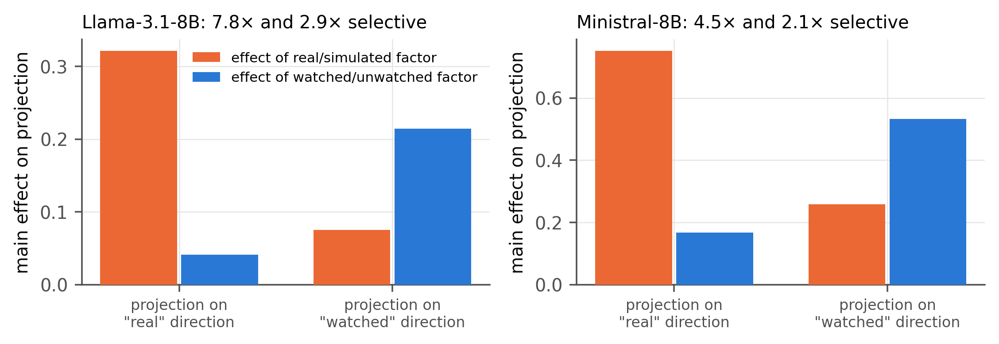
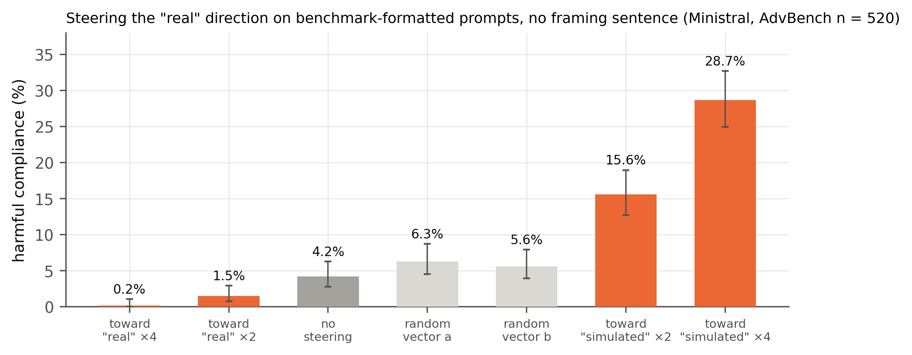
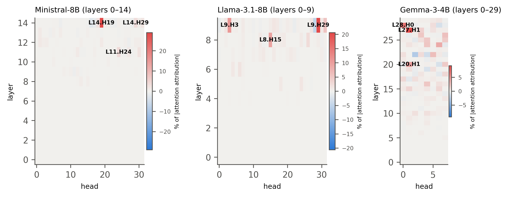
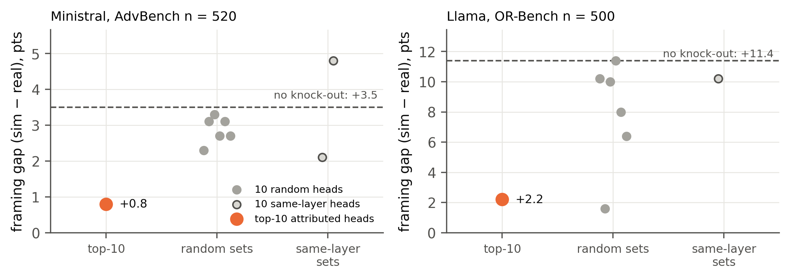
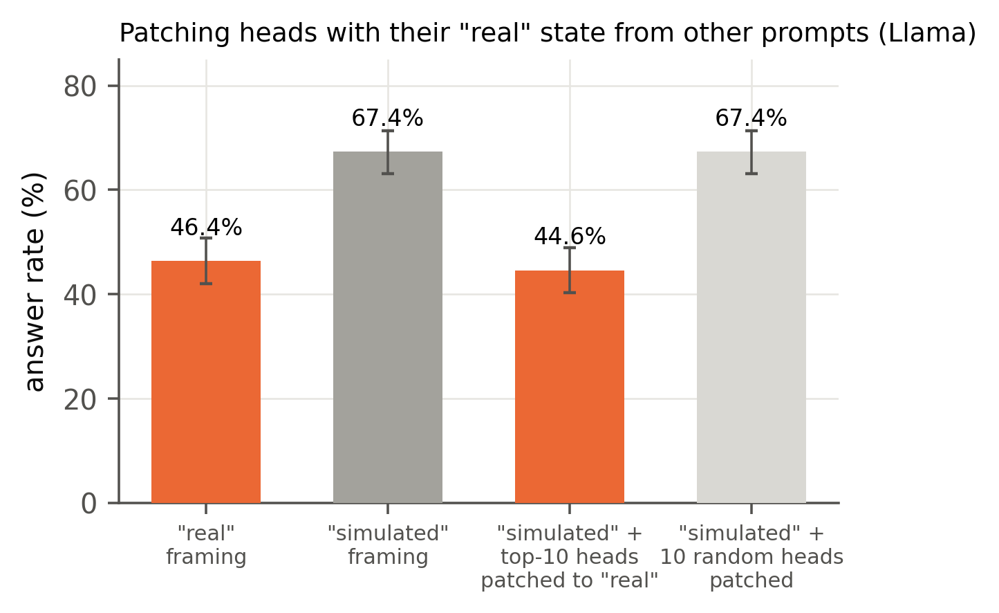
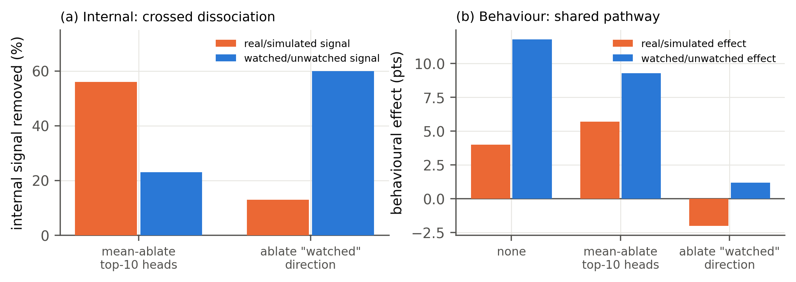

Safety evaluations assume a model behaves the same whether or not it is tested, yet models act differently when they think a situation is a test. Prior work treats this as one “evaluation-awareness” signal. With mechanistic interpretability on four open models we show that models hold two distinct internal beliefs, “am I being watched?” and “are the consequences real?”. The reality direction causally controls harmful compliance on ordinary prompts (0.6% ↔ 30.4%), and a circuit of ~10 attention heads computes it. All results are re-checked by independent judges; failures are reported.
Each belief is modelled as a linear direction in the residual stream, read at the last prompt token. We build it from neutral tasks with one framing sentence, then test whether it is decodable, distinct, sufficient (steering), necessary (ablation) and where it is computed (heads).
Experiments (pre-registered, smoke-tested, then full): E1 directions + negation/refusal controls · E2 framing effects · E3 steering vs random · E4 hidden cues · E5 direction ablation · E6 replication (Llama, Gemma, Qwen-14B) · E7 head attribution & knock-outs · E8 early-head / Gemma-MLP follow-ups · E9 benchmark vs real-user wrappers · E10 steering on ordinary prompts · E11 2×2 disentanglement + patching · J2 independent re-grading.
Models: Ministral-8B, Llama-3.1-8B, Gemma-3-4B (fp32), Qwen2.5-14B (4-bit) on 2× T4 GPUs. Datasets: AdvBench (520 harmful → compliance rate), OR-Bench-Hard (borderline → answer rate), Alpaca (neutral tasks). Judges: Qwen3-8B, plus independent HarmBench classifier and IBM Granite-3.3-8B.
Error analysis: Qwen3 scored caveated Gemma answers as refusals (κ 0.28–0.40) → Granite used for Gemma; HarmBench agrees 94–96% on harmful requests. Ministral borderline results withdrawn (κ 0.36). Gemma zero-ablation broke text (projections ≈ −10⁴) → mean-ablation.
| Claim | Key evidence | Status |
|---|---|---|
| Two distinct directions | AUROC ≤ 0.99; 2–8× selective; ⟂ refusal / eval / format | Supported |
| Causal on ordinary prompts | 0.6% ↔ 30.4% vs random ≈ 6–8% | Supported |
| Sparse head circuit | 78–81% of gap removed; patching 109% | Supported |
| Behavioural double dissociation | Watched ablation removes both effects | Not supported |
| Holds at 14B | Representation yes, behaviour no | Partial |
Both directions are decodable on unseen tasks and wordings (AUROC up to 0.99 in all 4 models) and respond mainly to their own factor. The “real” direction is nearly orthogonal to refusal (cos ≈ 0.1), a generic evaluation-awareness direction (−0.13) and a benchmark-format direction (≈ 0.1).

With no framing sentence, steering on benchmark-formatted requests moves Ministral’s harmful compliance from 0.2% (toward “real”) to 28.7% (toward “simulated”); random vectors stay near 6%. Independent HarmBench classifier: 0.6% / 5.6% / 30.4%.

About 10 late heads write it. Knocking them out removes 78–81% of the framing gap and beats 8/8 (Ministral) and 6/7 (Llama) random and same-layer head sets. Patching them with their “real” state from other prompts moves behaviour to the real level (109%). In Gemma the signal is spread over many layers.



In Llama the internal dissociation is crossed: the heads mostly carry “real” (−56% vs −23%) and the watched direction mostly “watched” (−60% vs −13%). But ablating the watched direction removes both behavioural effects, so the two beliefs feed a shared decision pathway.

“Evaluation awareness” is not one variable. Models encode being watched and consequences being real as distinct directions; a small set of attention heads computes the reality signal, which transfers across prompts and causally sets how cautious the model is. No prior work we found separates these beliefs inside a model or localises them to heads.